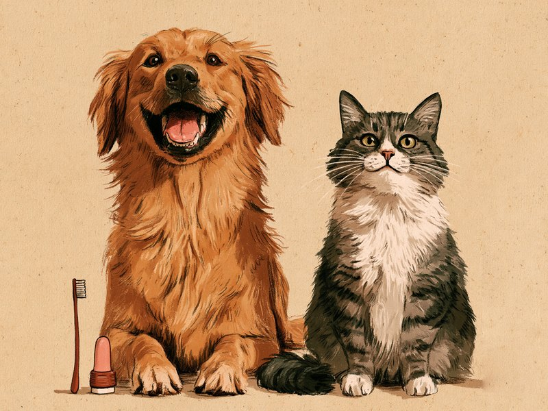

「うちの子、口がちょっとにおうかも」。そんな小さな気づきは、口腔ケアを見直すよいきっかけです。犬や猫の口の病気で最も多いとされる歯周病は、歯垢が歯石に変わる前に落とすことが予防の基本といわれています。この記事では、歯みがきの慣らし方から道具選び、歯みがき以外のケア、動物病院での歯石除去、受診を考えたいサインまで、飼い主さんが無理なく続けられる形でまとめました。 "Does my pet's breath smell a little?" Noticing something that small is a good chance to rethink oral care. Periodontal disease, said to be the most common oral disease in dogs and cats, is generally prevented by removing plaque before it hardens into tartar. This article walks through getting your pet used to tooth brushing, choosing the right tools, other kinds of care, professional dental cleaning at the vet, and the signs that mean it is time for a check-up, all in a way owners can keep up without strain.
なぜ歯みがきが大切?歯垢→歯石→歯周病の流れ
犬や猫の口の病気のなかで、もっとも多いとされているのが歯周病で、年齢とともに増える傾向があるとアニコム損保は説明しています(2007年調べのデータ)。割合については、アニコム損保の犬のページに、3歳以上の犬のおよそ8割が歯周病ともいわれる、という記載があります。また米国のBanfield社は、2010年に自社の来院データをもとに、3歳以上の犬の78%、猫の68%に何らかの口腔疾患(歯周病に限らない口の病気全般)があったと報告しました。ただしこれは米国の動物病院チェーンの古いデータで、日本の犬猫に同じ割合が当てはまるとは限りません。どちらも「多くの子が歯の問題をかかえている」ことを知るための目安として受け止めてください。
歯周病は、ある日突然できるものではありません。はじめは歯の表面に歯垢(細菌のかたまり)がつき、それが固まって歯石になり、歯ぐきが赤く腫れる歯肉炎へ、さらに歯を支える組織まで炎症が及ぶ歯周炎へと進むとされています。歯周炎まで進むと歯のぐらつきや膿が出ることがあり、場合によっては抜歯が必要になることもあります。
ここで知っておきたいのが、歯垢が歯石に変わる速さです。犬では1日で歯垢がつき、3日ほどで歯石になるとされ(同じ出典内でも2〜3日と書かれた箇所があります)、猫では約1週間といわれています。一度歯石になってしまうと、家庭での歯みがきでは取れません。自宅で器具を使って無理に歯石を取ろうとすると、犬が嫌な思いをして口を触らせなくなるおそれがあるため、歯石が気になるときは動物病院に相談しましょう。だからこそ、歯垢のうちに落とす日々の歯みがきが大切だといわれているのです。
出典を見る
出典: アニコム損保 犬の歯石 / アニコム損保 犬の歯周病 / アニコム損保 猫の歯周病 / アニコム どうぶつ辞典 歯周病(猫) / Veterinary Practice News(Banfield)
歯みがきの始め方:慣らしのステップ(犬と猫の違いも)
歯みがきを始める時期は、早いほど慣れやすいとされています。犬は乳歯が生え始めた頃から口に触れる練習を始めるのがよいとされ、猫は永久歯が生えそろう生後4〜6か月ごろまでに慣らしておきたい、とアニコム損保は案内しています。大人になってから始めるのは大変なケースが多いといわれますが、成犬・成猫でも時間をかければ慣れてくれる子もいます。いまからでも、あきらめなくて大丈夫です。
犬の慣らし方は、大きく3つの段階に分けて考えると進めやすいとされています。まず口の周りを触ることから始め、慣れてきたら唇をめくって歯や歯ぐきにそっと触れます。次に、指にガーゼや歯みがきシートを巻いて歯と歯ぐきをなでるようにし、最後に犬用または小児用の歯ブラシへ移ります。どの段階でも、できたらご褒美をあげて「口を触られると良いことがある」と覚えてもらうのがコツです。
猫の場合は、次のような流れで進めるのが基本とされています。口の周りや口の中に触れることから始め(ライオンペットでは、猫の好みの味の歯みがきジェルや、味付けをしていないささみのゆで汁を指につける方法が紹介されています)、指に巻くシートやガーゼ、指サック型の歯ブラシ、猫用の小さめの歯ブラシへと段階を踏みます。嫌がったらすぐにやめ、おやつを使って少しずつ進めることが大切です。無理をすると、二度とさせてくれなくなるだけでなく、飼い主さんが手を噛まれるなどして危ないため、できることから始めましょう。
頻度の目安として、アニコム損保は、犬は1日1回、最低でも3日に1回、猫はできれば毎日、難しければ2〜3日に1回と案内しています。犬では歯垢が3日ほどで歯石になるとされるため、間隔があくほど歯石になりやすいと考えて、できるだけ毎日に近づけるのが理想です。
最初は歯の外側の面だけでかまいません。口を大きく開けさせる必要はありません。うなる、歯をむく、噛もうとするといったときは、その場でやめてください。また、ガーゼやシートを指に巻いて使うときは、噛みちぎって飲み込んでしまわないよう目を離さず、ちぎれていないか毎回確認しましょう。
出典を見る
出典: アニコム損保 犬の歯みがき / アニコム損保 猫の歯みがき / ライオンペット 猫の歯みがき / VCA Hospitals(米) 歯みがきの準備 / アニコム損保 犬の歯石
道具選びと、使ってはいけないもの
歯ブラシは、犬なら犬用または小児用のもの、猫なら猫用の小さめのものや指サック型が使いやすいとされています。歯みがき粉(ペーストやジェル)を使う場合は、必ず犬猫用のものを選びましょう。ペットは口をゆすいで吐き出すことができず、そのまま飲み込んでしまうため、飲み込む前提で作られた製品であることが大切です。
人用の歯みがき粉は使わないでください。人用にはキシリトールなどが含まれていることがあり、犬ではキシリトールで低血糖を起こし、命に関わることがあるとFDA(米国食品医薬品局)やアニコム損保が注意を呼びかけています。猫への影響ははっきりしないとされていますが、猫にも人用は使わないでください。VCAは、人用の歯みがき粉にはフッ素など、ペットの体調不良の原因になる成分が含まれると説明しています。
もし犬が人用の歯みがき粉やキシリトール入りのものを口にしてしまったら、症状が出る前でも、すぐに動物病院に連絡してください。FDAは、犬がキシリトールを食べたときは、すぐにかかりつけの動物病院か救急の動物病院へ連れて行くようすすめています。
もうひとつ気をつけたいのが、噛むおもちゃの硬さです。硬い骨や角、ひづめ、ナイロン製のチューなど、曲がりにくいほど硬いものは、犬の歯の破折(歯が欠けたり割れたりすること)の原因になりうるとされています。米国の動物病院グループVCAは、そうしたものを避けるようすすめています(犬の歯の破折についての記事)。丸飲みしない大きさを選び、噛んでいる間は見守ってあげてください。
道具の種類ごとの選び方(歯ブラシ・シート・ジェル・水に加えるタイプやデンタルガム・VOHCの認定マーク)は、犬猫の歯みがきグッズの選び方で詳しく紹介しています。
出典を見る
出典: VCA Hospitals(米) 人用歯みがき粉 / VCA Hospitals(米) 歯みがきの準備 / FDA(米) キシリトール / アニコム損保 猫の歯みがき / VCA Hospitals(米) 犬の歯の破折 / ライオンペット 猫の歯みがき / ライオンペット 犬の歯みがき / アニコム損保 犬の歯みがき
歯みがき以外のケアと、動物病院での歯石除去
歯みがきシートやデンタルガム、噛むおもちゃ、歯科用フード、飲み水に混ぜるタイプの製品は、いずれも「歯ブラシの補助」と考えるのが基本とされています。アニコム損保は、シートやガムは歯の表面の汚れは取れても、歯と歯の間や歯と歯ぐきの間は取れないと説明しています。また、コーネル大学の解説では、歯科用フードや水に混ぜるタイプは、歯みがきに加える手段、あるいは歯みがきができない場合の手段として挙げられています。歯みがきの代わりになるものとは考えず、できるケアを組み合わせていきましょう。なお、ガムは与えすぎると体重が増えやすいので、パッケージの量を守ってあげてください。体重が気になるときは犬猫の食欲・肥満の記事もあわせてどうぞ。
製品選びの目安のひとつに、VOHC(米国獣医口腔衛生協議会)のシールがあります。メーカーが提出した試験データをVOHCが審査し、「歯垢抑制」「歯石抑制」の基準を満たした製品にシールが与えられる仕組みで、VOHC自身が製品を試験しているわけではありません。米国の団体の取り組みで、公的な認証ではなく、すべての子への安全性や好みを保証するものでもありません。VOHCは、家庭での口腔ケアでは歯みがきがゴールドスタンダード(最も基本)だと述べています。
すでについてしまった歯石は、動物病院での歯石除去が必要になります。歯石除去は犬猫とも原則として全身麻酔下で行われます。その理由として、歯周ポケットの中や歯ぐきの下まで評価・処置する必要があること、歯科レントゲンで歯ぐきの下の感染や骨の状態を調べること(犬では全身麻酔下でないと撮影できないことが多いとされます)、歯石取りは音や痛みを伴うことがあり、嫌がって動くとストレスや危険があることなどが挙げられています。麻酔の前には、心臓などの内臓機能を調べる検査も行われます。
無麻酔の歯石取りは、表面の局所的な歯石しか取れず、見た目がきれいになっても歯周ポケットの中の細菌感染が続くとされています(アニコム損保)。ある動物病院も、歯周ポケット内をきれいにする効果は限定的で、犬に恐怖心や痛みを与え、口を触られるのをますます嫌がるようになることもあると説明しています。dvm360の解説によると、米国の獣医療団体AAHAなども無麻酔の歯科処置は推奨していません。また、ジャパンケネルクラブ(JKC)は、獣医師以外が他人の動物の歯石除去を業として行うことについて、獣医師法で禁じられた診療業務にあたり、違法となる可能性があると注意を呼びかけています。歯石が気になるときは、動物病院に相談しましょう。
| ケア方法 | 主な役割 | 知っておきたい限界 |
|---|---|---|
| 歯みがき(歯ブラシ) | 歯垢のうちに落とす家庭ケアの基本。VOHCもゴールドスタンダードと述べている | 一度歯石になると歯みがきでは取れない。慣らしに時間がかかる子もいる |
| 歯みがきシート・ガーゼ | 歯ブラシに慣らす前段階。触れる範囲の歯の表面の汚れ落とし | 歯と歯の間や歯と歯ぐきの間は取れない。歯ブラシの補助。噛みちぎって飲み込まないよう目を離さない |
| デンタルガム・噛むおもちゃ | 噛むことで表面の汚れを落とす補助。VOHCシール製品は歯垢・歯石抑制の基準を満たしたもの | 歯みがきの代わりにはならない。硬すぎるものは歯の破折のおそれ、与えすぎは体重増加につながる |
| 水に混ぜるタイプ・歯科用フード | 歯みがきに加える、または歯みがきができない場合の手段(コーネル大学の整理) | 効果の程度は製品により異なる。歯みがきの代わりとは考えず、成分表示も確認する |
| 動物病院での歯石除去(全身麻酔下) | ついてしまった歯石を除去し、歯周ポケットや歯ぐきの下まで評価・処置 | 費用は病院差が大きい。麻酔前検査が必要で、シニアは獣医師と相談して決める |
| 無麻酔の歯石取り | 歯の表面の局所的な歯石を取る | 歯周ポケットの中は処置できず、細菌感染が続くとされる。獣医師以外が業として行うことは違法となる可能性がある(JKC) |
出典を見る
出典: VOHC(米国獣医口腔衛生協議会) / VOHC 審査の仕組み / コーネル大学 犬の歯の病気と家庭ケア / アニコム損保 犬の歯石 / アニコム損保 犬の歯周病 / アニコム損保 猫の歯周病 / アニコム損保 猫の歯みがき / アニコム病院 口腔ケア / dvm360(米国の獣医向け解説) / ジャパンケネルクラブ 獣医師以外による無麻酔歯石除去について
受診を考えたいサインと、嫌がる子・シニアへの接し方
受診を考えたいサインとしては、口臭が強い、よだれが増える、食べにくそう、歯ぐきの赤み・腫れ・出血、歯のぐらつき、頬や顔の腫れや膿、食欲の低下、口を気にするしぐさなどが挙げられます。口の中にしこりやできものがある場合や、口が開きにくい、あごが左右非対称、食べるたびに痛がるといった様子も、早めの相談が必要です。猫では、顔や口を触られるのを嫌がる、よだれで前足の先が濡れているといった変化もサインになります。急に大量のよだれが出た場合は、中毒など緊急の病気のこともあるとされるため、すぐに受診してください。口の中に異常が見えないのに口臭が強い場合は、腎臓などの全身の病気の可能性もあるとされるため、早めに相談してみてください。
猫は、食べない状態が続くことがとくに心配です。数日食べない状態が続くだけでも肝リピドーシス(脂肪肝)という肝臓の病気を起こすことがあるとされ、特に太った猫で注意が必要といわれています。アメリカのコーネル大学猫健康センターも、成猫では食べない状態が24時間続くだけでも健康に深刻な影響が出うると説明し、歯の痛みは猫が食べなくなる理由として多いとしています。丸1日ほとんど食べないときは、様子見をせず受診しましょう。
歯みがきを嫌がる子には、無理強いをしないことがいちばんです。きょうは前歯だけ、あすは左側だけ、その次は右側だけ、というように場所と回数を分けて、短い時間で少しずつ進めてみてください。それでもどうしても嫌がる、このままでは関係が悪くなりそう、と感じたら、ひとりで抱え込まずに動物病院に相談するのがおすすめです。これまで平気だった子が急に嫌がるようになった、触ると痛がるといった場合は、口の中に痛みがあるのかもしれません。無理に続けず、先に動物病院で口の中を見てもらいましょう。
シニアの子で全身麻酔が心配な場合は、かかりつけの獣医師に相談し、麻酔前の検査結果や体の状態をふまえて処置するかどうかを一緒に決めていくのが基本とされています。身体の調子が悪かったり高齢だったりして全身麻酔ができない場合もある一方で、高齢になってからも歯石取りが可能で、術前検査で安全性を確認し、必要なら先に持病の治療をしてから処置することもある、と説明する動物病院もあります。歯周病は放置すると悪化していく病気とされるため、麻酔のリスクと放置のリスクの両方を獣医師に聞いてみてください。シニア期の体調管理全般については、シニア期の暮らしガイドも参考にしてみてください。
費用は自由診療のため、病院や状態による差が大きいものです。アニコム損保は、犬の歯石除去を全身麻酔下で行うと数万円かかることもあると説明しています。ある動物病院の例(2022年)では、抜歯なしの軽度の場合で2万円〜(麻酔代込み、術前検査・内服は別)で、別の解説では3〜7万円ほどとされています。抜歯が加わるとさらに上がり、猫の費用の出典は確認できていません。事前に見積もりを聞いておくと安心です。
出典を見る
出典: アニコム損保 猫の歯周病 / アニコム損保 犬の歯周病 / アニコム損保 犬の歯石 / アニコム どうぶつ辞典 歯周病(猫) / アニコム損保 猫の歯の病気 / アニコム どうぶつ辞典 肝リピドーシス(猫) / コーネル大学猫健康センター 食欲不振 / アニコム損保 犬の歯みがき / アニコム病院 口腔ケア
- 猫が丸1日以上ほとんど食べない
- 猫が急に大量のよだれを出している
- 頬や顔が腫れている、膿が出ている
- 口が開きにくい、あごが左右非対称、食べるたびに痛がる
- 犬が人用の歯みがき粉やキシリトール入りのものを口にした
- 口臭が強い、よだれが増えた
- 食べにくそうにしている
- 歯ぐきの赤み・腫れ・出血、歯のぐらつき
- 口の中にしこりやできものがある
- 猫で、顔や口を触られるのを嫌がる、よだれで前足の先が濡れている
- これまで平気だった子が、急に歯みがきを嫌がるようになった
この記事は獣医師の監修を受けていません。気になる症状があるときは、この記事ではなく動物病院に相談してください。口の中に異常が見えないのに口臭が強い場合は、全身の病気の可能性もあるとされるため、自己判断せずご相談ください。
犬では、乳歯が抜けずに残る「乳歯遺残」が比較的多く見られ(猫では稀とされます)、永久歯との間に汚れがたまって歯周病の原因になることがあります。猫の乳歯遺残の処置は全身麻酔で行うため、様子をみたうえで避妊・去勢手術と合わせて抜歯する判断になることが多いようです。子犬・子猫のうちから口の中をのぞく習慣があると、こうした変化や犬猫の体調不良のサインにも早く気づきやすくなります。
ミニクイズ:犬猫用の歯みがき粉が手元にないときは、人用の歯みがき粉を少量なら使ってもよい?(タップして答えを見る)
こたえ×。人用は飲み込む前提で作られておらず、犬ではキシリトールによる低血糖で命に関わることがあります。少量でも使わず、必ず犬猫用を選んでください。